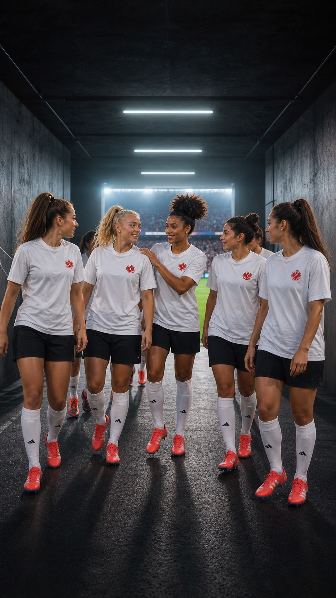

EFC Lotte Specht
Unsere Kurve. Unsere Stimmen.
Der EFC verbindet Eintracht-Leidenschaft mit einer offenen, weiblichen und solidarischen Fankultur.

Gemeinsam zum Spiel
Fankultur ist mehr als neunzig Minuten.
Wir wollen, dass Frauen als Fans selbstverständlich sichtbar und hörbar sind. Im Stadion, auf Auswärtsfahrten und überall dort, wo über Fußball gesprochen wird.
Unser EFC ist ein Ort für gemeinsames Erleben, Austausch und klare Haltung. Wer diese Idee teilt, ist eingeladen, uns kennenzulernen.
Mitfiebern.
Mitreden.EFC Lotte Specht